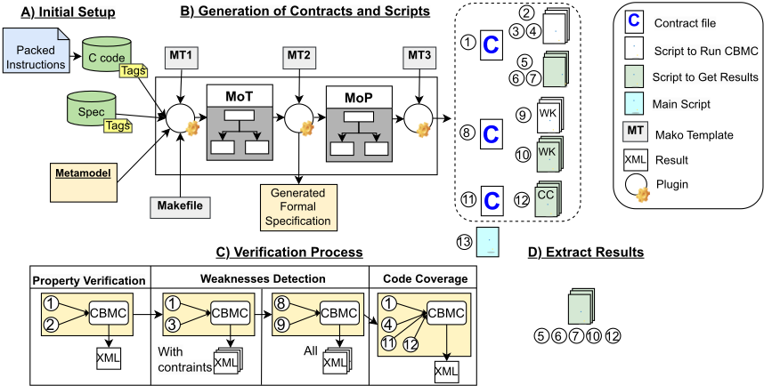
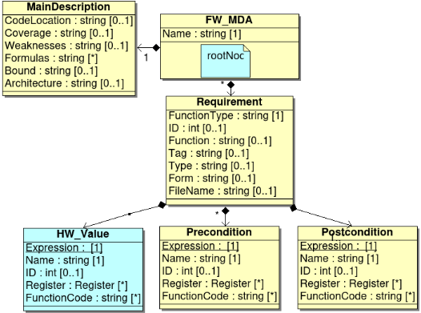
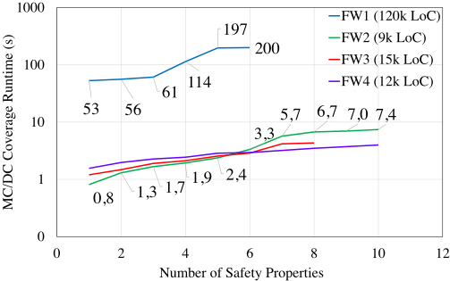

固件形式验证的自动化：一种新颖的基础与可扩展方法学
该论文针对固件（嵌入式 C 代码）形式验证缺乏可落地工业方法学的问题，提出一套自动化方案：基于 OMG Model Driven Architecture，用 MoT/MoP 元模型捕获安全需求，经 Mako 模板与 Python 插件自动生成含前置/后置条件的 C contracts 及运行开源工具 CBMC 的脚本，实现相对 HAL 的端到端寄存器验证，覆盖 ISO 26262-6 的 requirements-based tests、branch/MC/DC code coverage 与 CWE weakness detection，参数经 Makefile 管理。方法应用于 16/32 位工业固件：验证环境数秒内即可生成；FW2 在预开发阶段发现 1 个 24 小时回归仿真未捕获的 corner case bug（99.99739% 的测试会通过）；CBMC 为 FW2 生成 17675 个 assertions、检出 245 个潜在 weaknesses（其中 21 个 false positives）；FW1 属性验证平均 runtime 49s。结论表明固件形式验证可在工业环境中自动化，并可在早期用形式 code coverage 暴露 unreachable paths。
硬件形式验证已高度自动化并被工业界广泛采用，但固件（C 代码）的形式验证及其自动化缺乏可应用于工业环境的方法学。论文归纳三大挑战：1) 固件执行依赖硬件寄存器取值与交互，产生 unreachable paths，导致 code coverage 难以达标（如过压安全条件、COUNTER 寄存器使能序列两个实例）；2) 安全属性验证随寄存器数量与位宽增长出现组合爆炸（如双通道电压传感器需 549,755,813,888 次测试才能仿真穷尽）；3) 工业界缺乏形式方法在固件工具链中的应用定义、培训与专业知识。
基于 OMG Model Driven Architecture (MDA) 的四步自动化流程：1) Initial Setup——用户在自研 verification specification tool 中将安全需求填入元模型（前置/后置条件、HW values、bound 与架构参数，约每条需求 10 分钟），生成 alphanumeric tag 并以注释形式绑定到 C 函数体建立需求-代码链接，推荐使用访问 SFR 的 inline functions；2) 基于 MoT/MoP 中间模型、3 个 Mako 模板与 3 个 Python 插件，自动生成独立于源码的 C contracts（含初始寄存器值、前置条件、FUV、后置条件）以及运行 CBMC 的脚本（每个 weakness 单独一个脚本以便调试）；3) 验证流程依次为 unreachable paths 分析、带 bound 的属性检查、考虑/不考虑取值范围的 weakness 检测、code coverage 计算；4) 过滤 CBMC 的 XML 结果得到 unit/file/code coverage。生成文件数 N = 4 + n × (5 + 6 × w + 3 × c) + 3 × c（n 为需求数、w 为 weakness 数、c 为 coverage 参数数）。
生成器可在几秒内为 16 位与 32 位工业固件设计建立验证环境（contracts 与脚本生成耗时为秒级）
FW2 预开发阶段检测到 1 个 bug（设计阶段 bound 考虑失误），24 小时回归仿真未发现，该 corner case 在 99.99739% 的测试中会给出成功结果
CBMC 为 FW2 生成 17675 个 assertions，检测出 245 个潜在 weaknesses 并识别 21 个 false positives
FW1 属性用 contracts 验证平均 runtime 为 49s；同样验证因代码规模原因无法通过直接在代码中加 annotations 完成
FW1 code coverage 结果 XML 文件达 900k 行（80MB），需过滤后得到 unit/file/code coverage
MC/DC code coverage 的 runtime 随新增需求数量线性增长
用户初始信息填写工作量估计为每条需求 10 分钟
相对已有工作的区别：1) 已有固件验证工作或基于 Assembly 代码、或不考虑形式方法与自动化，CBMC weakness 检测的 setup 为手动且不针对固件设计；2) 本文将前置/后置条件从源码 annotations 中分离为独立 contracts 文件，避免在源码中引入验证错误，且 FW1 案例证明大规模代码下 annotations 方式不可行而 contracts 方式可行；3) 将 MDA/MoT/MoP 元模型方法从硬件属性生成（Assertion Based Verification）迁移到固件验证环境的全自动生成（Mako 模板 + Python 插件 + Makefile），实现需求-代码 tag 链接、相对 HAL 的端到端寄存器验证，以及在早期开发阶段用形式方法计算 code coverage 以暴露 unreachable paths。
相关度级别：medium
命中能力域：2.5 功能安全与安全机制 | 2.7 CyberSec/自动化
理由：论文主体是嵌入式固件（C 代码）的 ISO 26262-6 软件级形式验证自动化，不直接命中团队 2.1 DFT/ATPG、2.2 BSCAN、2.3 OCC/LBIST、2.4 HBM4/UCie 测试等硬件核心技术，也不涉及 2.6 的 fault injection/fault grading。但与两个能力域有实质关联：对 2.5 功能安全域，论文给出将 requirements-based tests、branch/MC/DC code coverage、weakness detection 自动化并产出可审计验证证据的工业流程，与团队 safety verification、safety case/安全文档的证据链组织方式相通；对 2.7 自动化域，其 MDA/MoT/MoP 元模型 + Mako 模板 + Python 插件的生成式自动化架构，与团队 'Data Source 到 FMEDA/DFMEA/JAMA export 自动化、DFT sign-off checklist' 的工程自动化范式同构，方法学可迁移；CWE weakness detection 亦与 CyberSec 概念相关。故评为 medium：方法有明确借鉴价值，但不直接命中团队硬件核心技术。
建议动作：作为方法参考存档
Bryan Olmos ∗† ，Sanjana Sainath ∗ ，Wolfgang Kunz † ，Djones Lettnin ∗ Am Campeon 1-15，Neubiberg - 85579，德国 ∗
英飞凌科技股份公司（Infineon Technologies AG）
† 莱茵兰-普法尔茨凯泽斯劳滕-兰道工业大学（Rheinland-Pfälzische Technische Universität Kaiserslautern-Landau）
电子安全系统需要保证一定的可信性水平。因此，其开发不仅必须考虑健壮的硬件，还必须考虑可信且可靠的嵌入式软件，例如固件、驱动程序和裸机软件。就硬件而言，形式验证的使用及其自动化是防止开发过程中出现缺陷的两个关键方面。然而，固件的形式验证，尤其是其自动化，缺乏一种可应用于工业环境的方法学。本文对固件验证进行了自动化，以覆盖 ISO26262-6 中定义的软件准则，例如基于需求的测试、代码覆盖率和弱点检测。此外，本文介绍了在开发早期阶段实现这种自动化的主要指导原则。所提出的方法学基于模型驱动架构（Model Driven Architecture）以及 C 文件的生成——这些文件通常被称为契约（contracts）。这些文件包含待验证的函数以及需要验证的前置条件和后置条件。本工作考虑端到端的寄存器验证，即相对于硬件抽象层（Hardware Abstraction Layer, HAL）对设计进行证明。此外，本工作还生成用于运行开源工具 Bounded Model Checker for ANSI C（CBMC）的脚本。该方法学已应用于 16 位和 32 位的工业设计。结果表明，生成器可以在几秒钟内搭建好验证环境，并且与硬件类似，验证运行时间取决于设计的复杂度。由于该方法学基于 Python 脚本和开源工具，因此可以轻松地在工业或学术环境中采用。
形式化验证工具已在业界被广泛用于硬件验证。这种采用主要有两个原因。首先，仿真等其他方法只能证明设计的有限正确性，却无法确保不存在缺陷。其次，验证过程已成功地实现自动化，从而减少了编写属性以及搭建运行形式化工具环境的工作量。这种自动化有助于缩短上市时间，因为片上系统（System on Chip, SoC）的验证过程仍然会消耗整个开发时间的 60% 以上 [1]。在高层软件方面，C 代码的形式化验证在过去 20 年中已得到广泛研究 [2], [3]。
上述研究使用开源工具 CBMC [2] 来验证属性，这些属性描述了待验证设计的规约。这些属性可以通过注解 [4], [5] 添加到 C 代码中，注解以该工具所要求的正确语法描述某个函数或某段代码的前置条件和后置条件。此外，已有工作证明了如何利用 CBMC 进行代码覆盖率分析，以及检测通用弱点枚举（Common Weaknesses Enumeration, CWE）社区所定义的软件弱点 [6]。
然而，固件验证的自动化流程在业界尚未得到清晰的定义。其主要原因在于，对于如何在工业工具链中应用形式化方法来验证基于 C 代码的固件设计，目前仍缺乏理解。
本文提出遵循对象管理组织（Object Management Group, OMG）的模型驱动体系结构（Model Driven Architecture, MDA）愿景 [7]，并借助开源工具 CBMC 和基于需求的验证，通过自动化基于 C 代码设计的形式化验证，来提升并扩展固件设计的可信性。本工作考虑了一种新颖的方法，用于自动化基于顺序 C 代码的固件验证。本文的主要贡献如下：
本文的组织结构如下：第 II 节讨论与软件验证、功能安全、元建模以及相关工作有关的主要概念。第 III 节介绍本工作所考虑的固件验证的主要挑战。第 IV 节介绍基于 MDA 构建生成器的方法学以及固件（FW）设计的指导原则。第 V 节展示实验结果。第 VI 节对这些结果进行讨论。第 VII 节给出结论与未来工作。
ISO26262-6 规定了汽车应用中软件级产品开发的要求 [8]。该标准建议对所有 ASIL（Automotive Safety Integrity Levels，汽车安全完整性等级）执行基于需求的测试和代码覆盖率分析。该标准规定了 3 种代码覆盖率度量指标：1）语句覆盖率度量程序中至少被执行一次的可执行语句。该覆盖准则被认为非常弱且无用，因为它未考虑对逻辑表达式的分析 [9]；2）分支覆盖率规定每个分支方向必须至少被遍历一次，例如，if-else 语句的条件必须针对真和假分别进行求值；3）MC/DC（Modified Condition/Decision Coverage，修正条件/判定覆盖）通过要求证明每个基本条件均能独立影响判定的结果，从而增强了条件/判定覆盖准则 [9]。此外，ISO26262-6 还定义了可与存储器内容相关的违规类型，例如缓冲区溢出、缓冲区下溢、野指针、存储器分配错误和存储器泄漏。
在 [10] 中，为了加速硬件设计生成器的构建，事物模型（MoT）和设计模型（Model-of-Design，MoD）被提出，其遵循对象管理组织（OMG，Object Management Group）的模型驱动架构（Model Driven Architecture，MDA）愿景 [7]。MoT 和 MoD 是基于元建模和代码生成的硬件设计中间模型。在 [11] 中，属性模型（MoP）被集成到 MDA 中，以支持为基于断言的验证（Assertion Based Verification，ABV）生成属性。在这些方法论中，工作流程首先将设计规范捕获到 MoT 中。随后，MoT 被转换为 MoP，MoP 表示抽象属性模型且与平台无关；并且 MoP 被复用于为不同平台生成代码。在本项目中，MoT 和 MoP 被用于对需求进行元建模，以及为 C 代码生成契约。
此前已有多项工作提出了固件（FW）的验证方法。例如，在文献 [12] 中，作者使用固件-硬件交互模式对其进行验证，但未考虑仿真或自动化。文献 [13] 引入了用于 FW 开发与验证的新技术。然而，这些技术考虑的是基于汇编代码的固件设计，与文献 [14] 中的工作类似。因此，它们不适合我们的目的。文献 [15] 提出在设计阶段使用内联函数，并将这些函数复用于验证。我们的方法论也采纳了这一思想。然而，前述方法并未考虑形式化方法或自动化。在文献 [6] 中，作者对软件弱点进行验证。尽管如此，CBMC 的配置过程是手动的，且其源代码并非专注于 FW 设计。关于使用契约与注解对 C 函数进行验证，已有多项相关工作，例如文献 [5] 使用契约对高层 C 代码进行验证。此外，文献 [16]、[17] 使用 VCC（Verified C compiler，经验证的 C 编译器），该工具在验证之前将带有注解的 C 程序翻译为一种中间语言；文献 [18] 则使用注释作为 C 程序的注解。在上述被引用的工作中，它们均在源代码中使用注解。
固件的验证在其开发过程中面临不同的挑战。在本工作中，我们考虑 3 个主要挑战。
代码覆盖率有助于检验我们测试的有效性，也就是说，它是一个用于衡量在使用我们的测试用例时被执行代码百分比的指标。若不对代码或测试用例集合进行详细分析，要达到100%的代码覆盖率并不总是可行的。原因之一是不可达路径的存在。在固件设计中，这一问题变得更为突出，因为代码的执行不仅取决于软件，还取决于硬件寄存器的取值及其交互作用，例如，考虑下面几种典型情况。
第一种情况：在一个数据宽度为16位的微控制器中实现了过压安全条件，如图1a)所示。当电压高于名为 MAX_VALUE 的常量时，该安全条件必须为 TRUE（第5行）。因此，软件开发者（SW）将 MAX_VALUE 的初始值设为65534（第1行），从而当取值为65535时即可触发该安全条件。然而，如果 READ_VOLTAGE() 函数对该数值进行了类型转换，或者有意或无意地未考虑寄存器的所有位，那么到达该条件的路径就可能是不可达的。在这些情况下，任何测试都无法覆盖该条件，只有在运行测试用例并分析代码之后，我们才能检测出这些不可达路径。
(1) #define MAX_VALUE 65534 (2) const uint16_t voltage; (3) void function_test(){ (4) (5) voltage = READ_VOLTAGE(); (6) if (voltage > MAX_VALUE){ (7) condition(TRUE); (8) } else { (9) condition(FALSE); (10) } (11) } (1) void function_enable() (2) { (3) while(READ_COUNTER()!=5); (4) function_init(); (5) #ifdef __CBMC__ (6) //Syntax CBMC (7) signed int nondet_int(); (8) WRITE_COUNTER(nondet_int()); (9) #endif (10) while (READ_COUNTER()< 10); (11) enable(TRUE); (12) } file= open("results.xml",'w') subprocess.check_call(['cbmc', '-I', 'folder_1/', '-I', 'folder_2', '-D', '__CBMC__', 'file_1.c', 'file_2.c', '--unwind','10', '--32', '--cover', 'mcdc', '--xml-ui', '--function', 'function_test' ],stdout=file
第二种情况：要使能微控制器的运行，需要针对名为 COUNTER 的寄存器的一系列事件序列，该寄存器只能由硬件（HW）修改。该事件序列代码的实现如图1b)所示。第一个 while 循环（第3行）只有在数值等于5时才会结束，而第二个 while 循环（第10行）只有在数值大于或等于10时才会结束；对于任何初始 COUNTER 值，这两个条件都无法满足，因此在软件仿真中将无法到达使能条件。此外，在第一个 while 循环之后会调用 function_init()（第5行），该函数同样可能受到 COUNTER 寄存器取值的影响。
在这 2 个示例中，不可达路径会影响验证。传统上，需要在编写、运行一组测试用例并分析其代码覆盖率之后，才能识别这些不可达路径。为克服这一挑战，在本工作中，我们提出在初始阶段使用形式化验证来获取代码覆盖率，例如，我们可以使用不带约束的契约调用 function_test() 或 function_enable()，并通过 Python 脚本运行 CBMC，如 1c) 所示。它将返回代码覆盖率。如果我们检测到由事件序列导致的不可达路径，则可以添加符合 CBMC 语法的指令，以便针对所有可能的取值验证硬件（HW）寄存器，如 1b) 所示。
非正式地说，安全属性规定在程序计算过程中“坏事”不会发生 [19]。在本工作中，我们将“坏事”视为由固件故障行为导致的危害。ISO26262-1 将危害定义为由系统的故障行为引起的潜在伤害来源 [8]。这些安全属性可以在 C 代码中实现为函数，用于监控嵌入式系统的传感器并防止伤害发生。与安全关键设计相关的函数容易受到功能故障的影响，例如：操作故障：遗漏或不必要的操作；条件故障：错误的条件或限值；行为故障：不符合要求的不正确行为 [20]。当实现这些功能的寄存器数量或其位长增加时，使用仿真技术对这些条件进行验证变得不可行。例如，考虑一个针对包含两个测量电压通道的传感器的属性，其要求为：
limit_1 的值是动态的，取决于 Voltage1、Voltage2 和 Configuration Parameter。要测试 error 是否总是被置为 1，我们必须考虑这些值的所有组合，即 549 755 813 888（65536*65536*128）次测试。为了克服这一挑战，我们提出使用形式化验证，该方法已针对高层应用代码使用形式化方法进行了大量分析，且先前的研究表明运行时间可缩短至毫秒级。
近年来，形式化工具在工业界的应用日益增多，尤其适用于中断控制器、总线协议桥、控制器和交叉开关等对形式化方法较为友好的硬件设计 [21]。然而，固件的形式化验证尚未形成明确定义，不仅需要该领域的一些基础概念，还需要相应的培训与专业经验。为克服这一挑战，我们提出了一种自动化工作流程。
图 2 展示了该方法学中考虑的四个步骤。在本工作中，所有这些步骤均已实现自动化，用户可以通过 Makefile 访问验证所需的参数。

In the initial phase, the requirements of the safety properties must be linked into a metamodel which includes the preconditions, postconditions, hardware values and the parameters for the verification such as bound and architecture. In this methodology, the user must manually fill this initial information in our in-house verification specification tool. The estimated effort for a user is 10 minutes by requirement. It is also necessary to have a link between the source code and the requirements. Thus, each time the user adds a requirement an alphanumeric string called "tag" is generated for our in-house verification specification tool. This tag is assigned to the body of the functions of the C code as a comment, this tagging process can be done during the generation of the skeleton of the C code or it can be added manually. Additionally, it is recommended the use of inline functions which access the special function registers (SFRs) and contained bitfields. These functions can automatically be generated using metamodel techniques and they help for the early start of firmware development and verification [15]. In case these SFRs are not defined, the address and the values of the registers can be specified manually in the specification.
In this step, we need to add an additional file with the definition of the packed instructions of the compiler or specific platform, for example, the instruction mul ( a, b ) can be defined as #define mul(a,b) a ∗ b .

The scripts to run the weaknesses consider all the in-built assertions of CBMC. They are specified in the Table I and could be verified using one single script, as shown in 1c). However, it makes the debugging process very hard. Additionally, the user can decide to only verify the code for certain weaknesses. For this reason, one script was generated for each weakness depending on the parameters specified for the user in a Makefile. The nomenclature for the Makefile is presented in Table I. It has to be done for each requirement in case the code size makes not possible to verify all the code at once.
To get the main code coverage, a new contract file was generated. This file calls the functions under verification of all the contracts as shown in Fig. 4b). The generated files shown in Fig. 2 are:
(1)#ifndef FILE_DECLARATION_REQ_1 (2)#define FILE_DECLARATION_REQ_1 (3)#include "file_req_1.c" (4)#endif (5)#include "formulas.h" (6)void contract_requirement_1(){ (7)signed int nondet_int(); (8) //Initial values for registers (9) REGISTER_1__WRITE(nondet_int); (10) REGISTER_2__WRITE(nondet_int); (11) HW_VALUE(adress,value); (12) // Preconditions (13) if(REGISTER_1__READ() >= formula){ (14) // Function Under Verification (15) function_requirement_1(); (16) // Postconditions (17) assert(REGISTER_2__READ() == 1); (18) } (19) } (1)#include "file_contract_1.c" (2)#include "file_contract_2.c" (3)//... (4)#include "file_contract_n.c" (5)int main(){ (6)contract_requirement_1(); (7)contract_requirement_2(); (8)//... (9)contract_requirement_n(); (10) }
| Weakness | CBMC command | Makefile | Example of assertions a |
|---|---|---|---|
| Buffer Overflow | -bounds-check | b | while(i<size){i++; assert(i < size);} |
| Pointer Check | -pointer-check | p | ptr = &val; assert(ptr != NULL); |
| Pointer Overflow | -pointer-overflow-check | o | int arr[SIZE]; int* ptr = &arr[0]; ptr += SIZE; assert(ptr >= &arr[0] && ptr < &arr[SIZE]); |
| Memory Leaks | -memory-leak-check | m | int *p = malloc(sizeof(int)); assert(p != NULL); |
| Division By Zero | -div-by-zero-check | d | c=a/b;assert(b != 0); |
| Arithmetic Overflow | -signed-overflow-check | s | uint16_t a,b,c; c= a+b; assert(!(a+b >= 32768)); |
| Floating Overflow | -float-overflow-check | f | float a,b,c; c = a + b; assert(!isinf(c)); |
| Conversion Error | -conversion-check | c | (uint16_t)(a+b);assert(!(a+b >= 32768)); |
| Undefined shifts | -undefined-shift-check | t | uint32_t x, y, n; x = y << n; assert(n <= 31); |
| Not a number | -nan-check | n | double x = sqrt(-1);assert(is_nan(x)); |
| Code Coverage | CBMC command | Makefile | Description |
| MC/DC Coverage | -cover mcdc | m | It states that each branch direction must be traversed at least once |
| Branch Coverage | -cover branch | b | Each basic condition in a decision must affect the outcome of the decision |
| Weakness | CBMC command | Makefile | Example of assertions a |
The user must add the input parameters for weaknesses detection and code coverage into a Makefile using, for example, the format weaknesses= "d" (division by zero and pointer check) and coverage = "m" (MC/DC coverage). The number of generated files N can be calculated as N = 4 + n × (5 + 6 × w +3 × c ) + 3 × c , where n is the number of requirements, w is the number of weaknesses under verification and c is the code coverage parameters selected by the users.
图2展示了实现中所考虑的验证流程。在完成不可达路径分析后，CBMC 首先在指定界限下检查代码是否满足需求；其次，CBMC 在考虑需求取值范围的情况下检查弱点；第三，它在不考虑取值范围的情况下验证代码，以检查所有可能的弱点——在此步骤中还会验证该界限对于所有可能的取值是否足够；最后，计算代码覆盖率。
对 CBMC 的结果进行了过滤，以便依据修正条件/判定覆盖（MC/DC）和分支覆盖准则获得单元覆盖率、文件覆盖率和代码覆盖率。之所以有必要对结果进行过滤，是因为根据代码规模的不同，XML 文件很容易包含数十万行；例如，包含固件 1 代码覆盖率结果的 XML 文件就有 90 万行（80MB）。
该方法被应用于 16 位和 32 位的固件设计。如表 II 所示，所有设计的契约（contracts）和脚本均在几秒钟内生成。该分析考虑了有效代码行数（LoC，Lines of Code）。各属性的运行时间取决于设计的规模和复杂度——这与硬件的形式验证类似。在 FW2 的预开发阶段检测到一个缺陷（bug）。其原因是设计阶段遗漏考虑的一个边界。在运行 24 小时的回归仿真期间未能检测到该缺陷，且结果表明它是一个在 99.99739% 的测试中都会给出成功结果的边界情况（corner case）。CBMC 能够为 FW2 生成 17675 条断言，可检测出 245 个潜在弱点，并识别出 21 个误报。在这种情况下，代码行数少于 FW2、FW3 和 FW4 的 FW1 中检测到了更多的弱点。这是因为 FW1 实现了对溢出和转换误差问题敏感的算术运算。
| Design.Name | Design.LoC | Property Verification.Safety Properties | Property Verification.Avg. Runtime | Weaknesses Verification.Generated assertions | Weaknesses Verification.With constraints | Weaknesses Verification.Without constraints | Code Coverage.Branch | Code Coverage.Branch | Code Coverage.MC/DC | MC/DC | Total Runtime |
|---|---|---|---|---|---|---|---|---|---|---|---|
| FW1 | 120k | 6 | 49 s | 9119 | 14 | 2 | 1.5% | 3min | 3,90% | 3min | 2h |
| FW2 | 9k | 10 | 0,48 s | 17675 | 245 | 21 | 40,60% | 4s | 52,20% | 6s | 4min |
| FW3 | 15k | 8 | 0.675 s | 34306 | 174 | 0 | 10,10% | 3s | 16,30% | 4s | 6min |
| FW4 | 12k | 10 | 1.029 s | 6395 | 0 | 0 | 11,6% | 3s | 13,8% | 3s | 4min |
| Design.Name | Design.LoC | Property Verification.Safety Properties | Property Verification.Avg. Runtime | Weaknesses Verification.Generated assertions | Weaknesses Verification.With constraints | Weaknesses Verification.Without constraints | Code Coverage.Branch | Code Coverage.Branch | Code Coverage.MC/DC | MC/DC | Total Runtime |
如图 5 所示，代码覆盖率的运行时间随新增需求数量的增加而线性增长。

代码覆盖率的运行时间取决于代码规模和属性的数量。在自动化验证中，并非所有代码都得到了验证，因为本工作的重点在于设计的安全属性。然而，正如引言中所提出的，仍然可以确定分支覆盖率和 MC/DC 覆盖率。FW1 的属性通过契约（contract）进行验证，平均运行时间为 49 秒；而由于其代码篇幅较长，直接在代码中使用注解（annotation）进行同样的验证并不可行。这表明了所提出方法的适应性。采用所提出的方法，所有设计的验证设置均得以快速生成。因此，所生成的契约可被其他模型检查器（Model Checker）复用，而脚本则可通过修改 Mako 模板来进行适配。
在本文中，我们提出了一个能够自动生成基于 C 代码的固件设计形式化验证设置的框架。在实验过程中，我们检测到了通过仿真（simulation）和模拟（emulation）未能发现的缺陷和弱点。我们可以得出结论：使用形式化方法可以提高固件设计的可靠性，并且该过程可以在工业环境中借助模型驱动架构（Model Driven Architecture）实现自动化。此外，我们展示了如何在初始阶段利用代码覆盖率来避免不可达路径。作为下一步，我们计划将该方法扩展至其他模型检查器，以实现嵌入式系统中基于 Rust 编程语言 [24] 的并发设计与程序的形式化验证自动化。